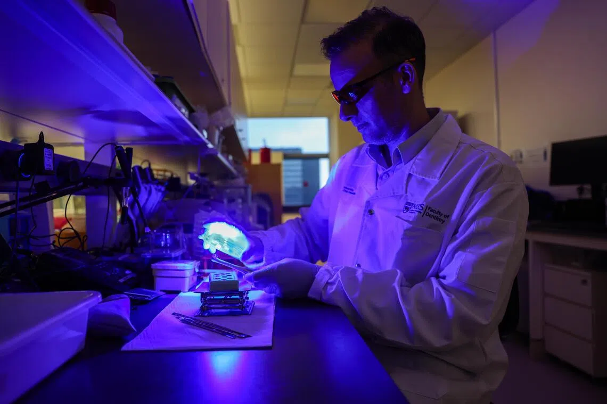

A/P Rosa's AI-enabled “living” laboratory models featured by The Straits Times
Research developed at NUS Dentistry was highlighted by Singapore's national newspaper for its potential to make biomedical testing safer, faster, and more predictive.
Associate Professor Vinicius Rosa's research on AI-enabled “living” laboratory models was featured in The Straits Times in May 2026, highlighting work developed by his team at the National University of Singapore Faculty of Dentistry.

The article presents the team's efforts to create advanced hydrogel-based systems that better replicate the behaviour of human tissues during biomedical testing. Traditional laboratory models rely on static cell culture systems that do not fully capture the complex, changing conditions found inside the human body.
A/P Rosa's approach addresses this by developing dynamic biomaterial platforms that can evolve over time — allowing researchers to study how cells respond to changing biological environments such as inflammation, acidity, tissue degradation, and repair.
We are not petri dishes.
A key aspect of the research is the integration of artificial intelligence with biomaterials design. Instead of relying on trial-and-error experimentation, the team uses AI models trained on real experimental data to guide the composition and properties of hydrogel systems — designing biomaterials around predicted cell behaviour and specific biological conditions.
Although the work was initially developed using dental pulp models, its potential extends well beyond dentistry. The same approach could be adapted to study other tissues — including gum, cartilage, bone, and disease-related environments such as cancer models.